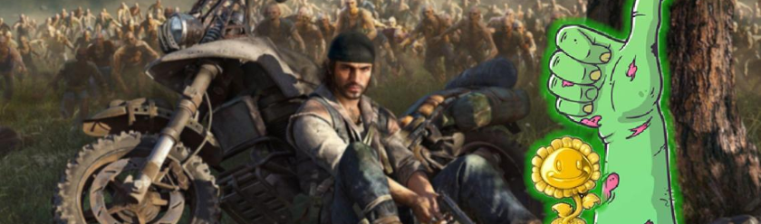
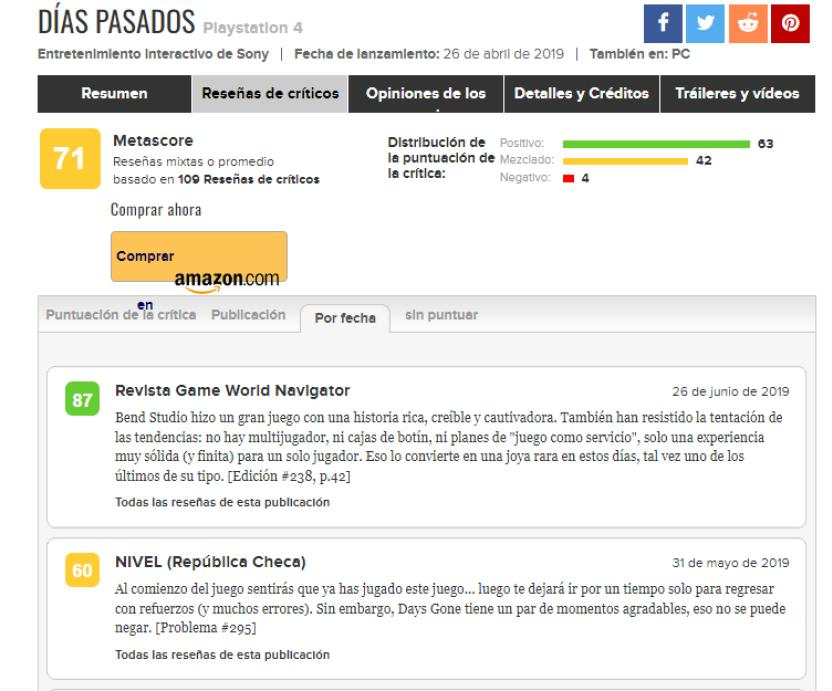
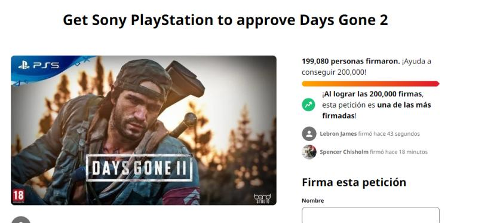

Days gone es un juego de supervivencia contra zombies que se lanzó en 2019 para PS4 y en 2021 para PC, y se ha convertido en uno de los mejores juegos de la temática de zombies según sus jugadores, que han disfrutado de la supervivencia salvaje que ofrece el videojuego gracias a PS Plus y Steam. Con estos comentarios, los fanáticos buscan convencer a Sony a Bend Studio de traer un segundo juego, luego de que estos negaran la posibilidad.
Con esta valoración por parte de sus jugadores, Days Gone alcanza en Metacritic un 71% de aprobación, lo que lo deja en un podio bastante alto dentro de la categoría de juegos de zombies como Left 4 Dead o Project Zomboid. Por desgracia para sus fans, luego de cuatro años de su lanzamiento aún no hay posibilidades de que Sony anuncie una segunda entrega del frenético juego, a pesar de las constantes peticiones de los fans y de los números que superaron los 9 millones de ventas, similar a Ghost of Tsushima, juego que obtuvo el Goty en 2020.
Desafortunadamente, Days Gone no tuvo una recepción lo suficiente positiva durante su lanzamiento, con algunas personas acusando a los críticos progres por esta situación, algo que fue descartado por Bend Studio al culpar a los bugs y errores de lanzamiento que fueron corregidos con el tiempo. Lo que no se pudo corregir fue la opinión de Sony al respecto por lo que decidieron no lanzar un segundo título, a pesar de que los fans lo han pedido por años, haciendo incluso una colecta de firmas en Change.org que ya supera las 199mil firmas.
Days Gone se puede conseguir en PS4, PS5 y Steam, y a pesar de que no exista posibilidad de un Days Gone 2, toca hacer caso a los fans de la saga y probar el juego repleto de armas, zombies, y un mundo abierto para buscar la supervivencia de distintas formas, para confirmar si, efectivamente, el título merece ser considerado uno de los mejores juegos de zombies de la historia.